수질환경기사 (2012-08-26 기출문제)
1과목: 수질오염개론
1. 지하수의 일반적 특성으로 옳지 않은 것은?
- 수온변동이 적고 탁도가 낮다.
- 미생물이 없고 오염물이 적다.
- 무기염류농도와 경도가 높다.
- 자정속도가 빠르다.
(정답률: 87%)

2. 우리나라 근해의 적조(red tide)현상의 발생 조건에 대한 설명으로 가장 적절한 것은?
- 햇빛이 약하고 수온이 낮을 때 이상 균류의 이상 증식으로 발생한다.
- 수괴의 연직 안정도가 적어질 때 발생된다.
- 정체수역에서 많이 발생된다.
- 질소, 인 등의 영양분이 부족하여 적색이나 갈색의 적조 미생물이 이상적으로 증식한다.
(정답률: 82%)
3. 콜로이드들을 응집시키는데 기본 메카니즘과 가장 거리가 먼 것은?
- 전하의 중화
- 이중층의 압축
- 입자간의 가교 형성
- 중력에 따른 전단력 강화
(정답률: 79%)
4. 150kL/day의 분뇨를 산기관을 이용하여 포기하였는데 분뇨에 함유된 BOD의 20%가 제거되었다. BOD 1kg을 제거하는데 필요한 공기공급량이 60m3 이라 했을 때 시간당 공기공급량은? (단, 연속포기, 분뇨의 BOD는 20000mg/L 이다.)
- 100m3
- 500m3
- 1000m3
- 1500m3
(정답률: 77%)
5. 순수한 물의 물리적 특성에 대한 내용으로 옳지 않는 것은?
- 4℃, 1기압에서 밀도는 1000kg/m3 이다.
- 비열은 1.0cal/g∙℃(15℃) 이다.
- 융해열은 79.4cal/g(0℃) 이다.
- 표면장력은 539dyne/cm2 (20℃) 이다.
(정답률: 76%)
6. Formaldehyde(CH2O)의 COD/TOC비는?
- 1.37
- 1.67
- 2.37
- 2.67
(정답률: 83%)
7. 다음의 내용으로 정의되는 법칙은?
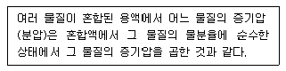
- Graham 's 법칙
- Raoult 's 법칙
- Henry 's 법칙
- Dalton 's 법칙
(정답률: 76%)
8. 박테리아를 분류함에 있어 성장을 위한 환경적인 조건에 따라 분류하기도 하는데, 다음 중 바닷물과 비슷한 염조건하에서 가장 잘 자라는 박테리아(호염균)는?
- Hyperthermophiles
- Microaerophiles
- Halophiles
- Chemotrophs
(정답률: 80%)
9. DO 포화농도가 8mg/ℓ인 하천에서 t=0 일 때 DO가 5mg/ℓ이라면 6일 유하했을 때의 DO 부족량은? (단, BODu=20mg/ℓ , k1 =0.1/day, k2 =0.2/day, 상용대수)
- 약 2mg/ℓ
- 약 3mg/ℓ
- 약 4mg/ℓ
- 약 5mg/ℓ
(정답률: 62%)
10. 어느 저수지의 용량이 2.8×108m3 이고 염분의 농도가 1.25%이며 유량은 2.4×109m3/년 이라면 저수지 염분농도가 200mg/L로 될 때까지의 소요시간은? (단, 염분 유입은 없으며 저수지는 완전혼합반응조로 가정한다.)
- 4.6개월
- 5.8개월
- 6.9개월
- 7.4개월
(정답률: 60%)
11. 어떤 시료에 메탄올(CH3OH) 250 mg/L가 함유되어 있다. 이 시료의 ThOD 및 BOD5 의 값은? (단, 메탄올의 BODu = ThOD 이며 탈산소계수는 0.1/day 이고 base는 10 이다.)
- ThOD 325 mg/L, BOD5 256 mg/L
- ThOD 325 mg/L, BOD5 286 mg/L
- ThOD 375 mg/L, BOD5 256 mg/L
- ThOD 375 mg/L, BOD5 286 mg/L
(정답률: 78%)
12. 어떤 하수의 BOD3 가 140mg/L이고 탈산소계수 k(상용대수)가 0.2/day 일 때 최종 BOD(mg/L)는?
- 약 164
- 약 172
- 약 187
- 약 196
(정답률: 55%)
13. 해류와 그것을 일으키게 하는 원인을 기술한 내용으로 옳은 것은?
- 상승류-해저의 화산활동
- 조류-해저부에서 해상부로 수괴이동작용
- 쓰나미-바람과 해양 및 육지의 상호작용
- 심해류-해수의 밀도차
(정답률: 69%)
14. 농도가 A인 기질을 제거하기 위하여 반응조를 설계하고자 한다. 요구되는 기질의 전환율이 90%일 경우 회분식 반응조의 체류시간은? (단, 기질의 반응은 1차 반응이며, 반응상수 K는 0.35/hr 이다.)
- 6.58 hr
- 7.54 hr
- 8.32 hr
- 9.42 hr
(정답률: 49%)
15. 0℃에서 DO 7.0mg/L인 물의 DO 포화도는 몇 %인가? (단, 대기의 화학적 조성 중 O2 는 21%(V/V), 0℃에서 순수한 물의 공기 용해도는 38.46mL/L, 1기압 기준 기타 조건은 고려하지 않음)
- 약 61%
- 약 74%
- 약 82%
- 약 87%
(정답률: 41%)
16. 산소주입량을 구하기 위하여 먼저 물 속의 용존산소농도를 0으로 만들려고 한다. 이를 위하여 용존산소가 포화(포화농도는 11mg/L로 가정)된 물에 소요되는Na2SO3의 첨가량은? (단, Na : 23, 완전 반응하는 경우로 가정함)
- 약 73 mg/L
- 약 87 mg/L
- 약 92 mg/L
- 약 103 mg/L
(정답률: 69%)
17. 유해물질과 그 중독증상(영향)과의 관계로 가장 거리가 먼 것은?
- Mn : 혹피증
- 유기인 : 현기증, 동공축소
- Cr6+ : 피부궤양
- PCB : 카네미유증
(정답률: 75%)
18. 생물학적 변환을 통한 유기물의 환경에서의 거동 또는 처리에 관한 일반적인 법칙으로 옳지 않은 것은?
- 알데하이드는 알코올이나 산보다 독성이 강하다.
- 탄화수소는 알코올, 알데하이드, 또는 산보다 산화되기 어렵다.
- 케튼은 알데하이드보다 분해되기 쉽다.
- 불포화 지방족 화합물(이중결합을 가진 것)은 포화지방족 화합물보다 쉽게 분해된다.
(정답률: 59%)
19. Na+ =360mg/ℓ, Ca2+=80mg/ℓ, mg2+=96mg/ℓ인 농업용수의 SAR치는? (단, 원자량 Na: 23, Ca:40, Mg:24)
- 약 4.8
- 약 6.4
- 약 8.2
- 약 10.6
(정답률: 64%)
20. 화학흡착에 관한 내용으로 옳지 않는 것은?
- 흡착된 물질은 표면에 농축되어 여러 개의 겹쳐진 층을 형성함
- 흡착 분자는 표면에 한 부위에서 다른 부위로의 이동이 자유롭지 못함
- 흡착된 물질 제거를 위해 일반적으로 흡착제를 높은 온도로 가열함
- 거의 비가역적임
(정답률: 69%)
2과목: 상하수도계획
21. 하수처리시설의 이차침전지에 대한 설명으로 틀린 것은?
- 유효수심은 2.5~4m를 표준으로 한다.
- 이차침전지의 고형물부하율은 40~125kg/m2 ㆍ d로 한다.
- 침전시간은 계획1일 최대오수량에 따라 정하며 일반적으로 6~8시간으로 한다.
- 침전지 수면의 여유고는 40~60cm 정도로 한다.
(정답률: 57%)
22. 정수처리방법인 중간염소처리에서 염소의 주입 지점으로 가장 적절한 것은?
- 혼화지와 침전지 사이에서 주입
- 침전지와 여과지 사이에서 주입
- 착수정과 혼화지 사이에서 주입
- 착수정과 도수관 사이에서 주입
(정답률: 67%)
23. 하수슬러지 개량방법과 특징으로 틀린 것은?
- 고분자응집제 첨가 : 슬러지 성상을 그대로 두고 탈수성, 농축성의 개선을 도모한다.
- 무기약품 첨가 : 무기약품은 슬러지의 pH를 변화시켜 무기질 비율을 증가시키고 안정화를 도모한다.
- 열처리 : 슬러지 성분의 일부를 용해시켜 탈수 개선을 도모한다.
- 세정 : 혐기성 소화슬러지의 알칼리도를 증가시켜 탈수개선을 도모한다.
(정답률: 70%)
24. 도수거에 대한 다음 설명 중 적당치 않는 것은?
- 평균유속의 최대한도는 3m/sec 이며, 최소유속은 0.3m/sec로 한다.
- 한랭지에서 뿐만 아니라 기타 장소에서도 될 수 있으면 암거로 설치한다.
- 암거인 경우, 대개 300~500m 간격에 신축이음을 설치한다.
- 암거에는 환기구를 설치한다.
(정답률: 63%)
25. 호소, 댐을 수원으로 하는 경우의 취수시설인 취수틀에 관한 설명으로 틀린 것은?
- 수위변화에 대한 영향이 비교적 작다.
- 호소 등의 대소에는 영향을 받지 않는다.
- 호소의 표면수를 안정적으로 취수할 수 있다.
- 구조가 간단하고 시공도 비교적 용이하다.
(정답률: 60%)
26. 펌프의 토출량이 1,200m3/hr, 흡입구의 유속이 2.0m/sec일 경우 펌프의 흡입구경은?
- 약 262mm
- 약 362mm
- 약 462mm
- 약 562mm
(정답률: 55%)
27. 계획오수량에 관한 설명 중 틀린 것은?
- 계획시간 최대오수량은 계획 1일 최대오수량의 1시간당 수량의 1.3~1.8배를 표준으로 한다.
- 지하수량은 1인 1일 최대 오수량의 10~20%로 한다.
- 합류식의 우천시 계획오수량은 원칙적으로 계획 1일 최대오수량의 3배 이상으로 한다.
- 계획 1일 평균 오수량은 계획 1일 최대 오수량의 70~80%를 표준으로 한다.
(정답률: 57%)
28. 순산소활성슬러지법의 특징이 아닌 것은?
- 슬러지의 탈수성이 양호하여 탈수 시 여과속도가 표준활성슬러지법의 2배 이상으로 유지된다.
- MLSS농도는 표준활성슬러지법의 2배 이상으로 유지 가능하다.
- 포기조내의 SVI는 보통 100 이하로 유지되고 슬러지의 침강성은 양호하다.
- 이차침전지에서 스컴이 발생하는 경우가 많다.
(정답률: 45%)
29. 토출량 20m3/min, 전양정 6m, 회전속도 1200rpm인 펌프의 비속도는?
- 약 1300
- 약 1400
- 약 1500
- 약 1600
(정답률: 65%)
30. 다음 중 하수도 계획에 대한 설명으로 옳은 것은?
- 하수도 계획의 목표연도는 원칙적으로 30년으로 한다.
- 하수도 계획구역은 행정상의 경계구역을 중심으로 수립한다.
- 새로운 시가지의 개발에 따른 하수도 계획구역은 기존 시가지를 포함한 종합적인 하수도 계획의 일환으로 수립한다.
- 하수처리구역의 경계는 자연유하에 의한 하수배제를 위해 배수구역 경계와 교차하도록 한다.
(정답률: 52%)
31. 슬러지 농축방법 중 중력식 농축에 관한 내용으로 틀린 것은? (단, 부상식, 원심분리, 중력벨트 방법과 비교 기준)
- 저장과 농축이 동시에 가능하다.
- 잉여슬러지 농축에 적합하다.
- 약품을 사용하지 않는다.
- 설치비와 설치면적이 크다.
(정답률: 54%)
32. 정수처리를 위해 완속여과방식(불용해성 성분의 처리방식)만을 선택하였을 때 거의 처리할 수 없는 항목(물질)은?
- 탁도
- 철분, 망간
- ABS
- 농약
(정답률: 61%)
33. 상수 담수화방식(상변화 방식) 중 증발법에 해당되지 않는 것은?
- 다단플래쉬법
- 다중효용법
- 가스수화물법
- 투과기화법
(정답률: 52%)
34. 하수의 계획오염부하량 및 계획유입수질에 관한 내용으로 틀린 것은?
- 계획유입수질 : 계획오염부하량을 계획1일 최대 오수량으로 나눈 값으로 한다.
- 생활오수에 의한 오염부하량 : 1인 1일당 오염 부하량원 단위를 기초로 하영 정한다.
- 관광오수에 의한 오염부하량 : 당일관광과 숙박으로 나누고 각각의 원단위에서 추정한다.
- 영업오수에 의한 오염부하량 : 업무의 종류 및 오수의 특징 등을 감안하여 결정한다.
(정답률: 65%)
35. 하수배제 방식 중 합류식에 관한 설명으로 알맞지 않은 것은?
- 관로계획 : 우수를 신속히 배수하기 위해 지형조건에 적합한 관거망이 된다.
- 청천시의 월류 : 없음
- 관거오접 : 없음
- 토지이용 : 기존의 측구를 폐지할 경우는 뚜껑의 보수가 필요하다.
(정답률: 59%)
36. 하수도 관거의 단면형상이 계란형일 때 장 ㆍ 단점으로 틀린 것은?
- 유량이 큰 경우, 원형거에 비해 수리학적으로 유리하다.
- 원형거에 비하여 관폭이 작아도 되므로 수직방향의 토압에 유리하다.
- 재질에 따른 제조비가 늘어나는 경우가 있다.
- 수직방향의 시공에 정확도가 요구되므로 면밀한 시공이 필요하다.
(정답률: 50%)
37. 하수 슬러지 소각을 위한 유동층소각로의 장단점 으로 틀린 것은?
- 연소효율이 높고 소각되지 않는 양이 적기 때문에 로잔사매립에 의한 2차 공해가 없다.
- 유동매체로 규소 등을 사용할 때에 손실이 발생하므로 손실보충을 연속적으로 하여야 한다.
- 로 내 온도의 자동제어 및 열회수가 용이하다.
- 로 내의 기계적 가동부분이 많아 유지관리가 어렵다.
(정답률: 59%)
38. 펌프의 형식 중 베인의 양력작용에 의하여 임펠러내의 물에 압력 및 속도에너지를 주고 가이드베인으로 속도에너지의 일부를 압력으로 변환하여 양수작용을 하는 펌프는?
- 원심펌프
- 축류펌프
- 사류펌프
- 플랜지 펌프
(정답률: 51%)
39. 상수도시설인 도수시설에 관한 설명으로 틀린 것은?
- 도수시설의 계획도수량은 계획정수량을 기준으로 한다.
- 도수노선은 원칙적으로 공공도로 및 수도용지로 한다.
- 수평이나 수직방향의 급격한 굴곡을 피하고 어떤 경우라도 최소동수경사선 이하가 되도록 노선을 선정한다.
- 도수시설은 취수시설에서 취수된 원수를 정수시설까지 끌어들이는 시설이다.
(정답률: 47%)
40. 펌프의 캐비테이션(공동현상) 발생을 방지하기 위한 대책으로 옳은 것은?
- 펌프의 설치위치를 가능한 한 높게 하여 가용유효흡입 수두를 크게 한다.
- 흡인관의 손실을 가능한 한 작게 하여 가용유효흡입 수두를 크게 한다.
- 펌프의 회전속도를 높게 선정하여 필요유효흡입 수두를 작게 한다.
- 흡입 측 밸브를 완전히 폐쇄하고 펌프를 운전한다.
(정답률: 53%)
3과목: 수질오염방지기술
41. Phostrip Process에 관한 설명으로 틀린 것은?
- 질소와 인의 동시 제거시 운전의 유연성이 크다.
- 기존 활성슬러지 처리장에 쉽게 적용 가능하다.
- 인제거시 BOD/P비에 의하여 조절되지 않는다.
- Stripping을 위하여 별도의 반응조가 필요하다.
(정답률: 57%)
42. 염소이온 농도가 500mg/ℓ 이고 BOD 2000mg/ℓ 인폐수를 희석하여 활성 슬러지법으로 처리한 결과 염소이온 농도와 BOD는 각각 50mg/ℓ 이었다. 이 때의 BOD 제거율은? (단, 희석수의 BOD, 염소이온 농도는0 이다.)
- 85%
- 80%
- 75%
- 70%
(정답률: 53%)
43. 다음 조건하에서의 폭기조 용적은?
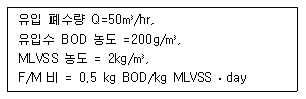
- 240m
- 380m
- 430m
- 520m
(정답률: 55%)
44. 하수처리를 위한 소독방식의 장단점에 관한 내용으로 틀린 것은?
- CIO2 : 부산물에 의한 청색증이 유발될 수 있다.
- CIO2 : pH 변화에 따른 영향이 적다.
- NaOCI : 잔류효과가 작다.
- NaOCI : 유량이나 탁도 변동에서 적응이 쉽다.
(정답률: 64%)
45. 유량이 3000m3/일 이고, SS 농도가 220 mg/ℓ인 폐수의 SS 처리효율이 60%일 때 처리장에서 하루 발생하는 슬러지의 양은? (단, 슬러지 비중 : 1.03, 함수율 : 94%, 처리된 SS는 모두 슬러지로 발생한다.)
- 약 4.8m3
- 약 6.4m3
- 약 8.6m3
- 약 10.3m3
(정답률: 46%)
46. 반지름이 8cm인 원형 관로에서 유체의 유속이 20m/sec이었을 때 반지름이 40cm인 곳에서의 유속(m/sec)은? (단, 유량은 동일하며 기타 조건은 고려하지 않음)
- 0.8
- 1.6
- 2.2
- 3.4
(정답률: 48%)
47. 하수관거가 매설되어 있지 않은 지역에 위치한 500개의 단독주택(정화조 설치)에서 생성된 정화조 슬러지를 소규모 하수처리장에 운반하여 처리할 경우, 이로 인한 BOD 부하량 증가율(질량기준, 유입일 기준)은?
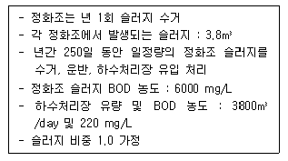
- 약 3.5%
- 약 5.5%
- 약 7.5%
- 약 9.5%
(정답률: 49%)
48. 포기조의 유입수 BOD=150mg/L, 유출수BOD=10mg/L, MLSS=3000mg/L, 미생물 성장계수 (y)=0.7kgMLSS/kgBOD, 내생호흡계수(kd)=0.03day-1, 포기시간(t) = 6시간 이다. 미생물체류시간(θc)은?
- 약 10 day
- 약 12 day
- 약 14 day
- 약 16 day
(정답률: 46%)
49. 5단계 Bardenpho 공법에 관한 설명으로 틀린 것은?
- 슬러지 생산량은 비교적 많으나 반응조의 규모가 작다.
- 호기조에서 1차 무산소조로 내부반송을 한다.
- 효과적인 인제거를 위해서는 혐기조에 질산성 질소가 유입되지 않아야 한다.
- 인제거는 과잉의 인을 섭취한 슬러지를 폐기함으로서 이루어진다.
(정답률: 44%)
50. 함수율 96%인 축산폐수 500m3/day가 혐기성소화조에 투입되고 있다. 이 축산폐수의 VS/TS비는 50%이며 혐기성 소화 후 VS물질의 80%가 가스로 발생하고 있다. 이 소화조에서 하루 발생한 소화가스의 열량은? (단, 축산폐수에 비중은 1.0 VS 1ton은 25m3 의 소화가스를 발생시키며, 소화가스 1m3 의 열량은 6000kcal이다.)
- 130,000 kcal/day
- 400,000 kcal/day
- 840,000 kcal/day
- 1,200,000 kcal/day
(정답률: 51%)
51. 연속회분식반응조(SBR)공법은 한 개의 반응조에서 시간별로 운전단계가 변화하며 하폐수를 처리하는 공정이다. 다음 중 SBR공법의 일반적인 운전단계의 순서로 올바른 것은?
- 주입(Fill) → 휴지(Idle) → 반응(React) → 침전(Settle) → 제거(Draw)
- 주입(Fill) → 반응(React) → 휴지(Idle) → 침전(Settle) → 제거(Draw)
- 주입(Fill) → 반응(React) → 침전(Settle) → 휴지(Idle) → 제거(Draw)
- 주입(Fill) → 반응(React) → 침전(Settle) → 제거(Draw) → 휴지(Idle)
(정답률: 55%)
52. SS가 거의 없고 COD가 1500 mg/L인 산업폐수를 활성슬러지 공법으로 처리하여 유출수 COD를 180mg/L로 처리하고자 한다. 아래의 주어진 조건을 이용하여 반응시간 θ를 구한 값으로 적절한 것은?
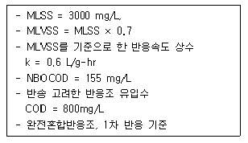
- 16.2 hr
- 19.8 hr
- 23.8 hr
- 28.2 hr
(정답률: 35%)
53. 폭기조의 혼합액을 30분간 침강시킨 후의 침전물 부피는 500mL/L, MLSS 농도가 4000mg/L 였다면 침전지에서의 침전상태는?
- 슬러지 팽화로 침전이 불량하다.
- 슬러지의 계면침강으로 결국 부상현상이 유발된다.
- 핀 플록 현상으로 슬러지 침강이 불량하다.
- 정상적이다.
(정답률: 53%)
54. 연속회분식반응조공법(SBR)의 장점이 아닌 것은?
- BOD부하의 변화폭이 큰 경우나 충격부하에 잘 견딘다.
- 일반적으로 처리용량이 큰 처리장에 적용된다.
- 탄소성 유기물산화, 질소 및 인제저가 가능하다.
- 슬러지 반송을 위한 펌프가 필요 없다.
(정답률: 50%)
55. 완전혼합반응기로 A의 농도가 150mg/ℓ, 유량이 380ℓ/min인 유체가 유입되고 있다. 반응은 일차반응이며 반응식은
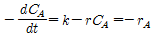
이며 반응속도 상수는 0.40/hr이다. 80% 제거율을 위해 필요한 완전혼합 반응기의 부피는 플러그흐름 반응기의 몇 배인가? (단,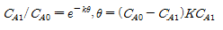
)- 6.3배
- 4.9배
- 3.6배
- 2.5배
(정답률: 26%)
56. 회전원판법(RBC)의 장점과 가장 거리가 먼 것은?
- 미생물에 대한 산소 공급 소요전력이 적다.
- 고정메디아로 높은 미생물 농도 및 슬러지밀령을 유지 할 수 있다.
- 기온에 따른 처리효율의 영향이 적다.
- 재순환이 필요 없다.
(정답률: 43%)
57. 살수여상 상단에서 연못화(ponding)가 일어나는 원인과 가장 거리가 먼 것은?
- 여재가 너무 작을 때
- 여재가 견고하지 못하고 부서질 때
- 탈락된 생물막이 공극을 폐쇄할 때
- BOD 부하가 낮을 때
(정답률: 54%)
58. 슬러지일령(sludge age)이란, 슬러지 즉, 고형물인 MLSS가 처리공정에서 머무르는 시간으로서 고형물 체류시간(SRT)을 말한다. 다음과 같은 조건으로 운전되고 있는 완전혼합 활성슬러지공법에서의 슬러지일령은? (단, 포기조 유입 폐수량 1000m3/일, 포기조 용량 500m3 포기조 유입 BOD 250 mg/L, 포기조 MLSS 농도 3000 mg/L, 잉여슬러지량 10m3 /일, 잉여슬러지 농도 8000 mg/L 방수류 SS 농도 10 mg/L 이다.)
- 약 10.3일
- 약 12.5일
- 약 14.3일
- 약 16.7일
(정답률: 27%)
59. 원형 1차침전지를 설계하고자 한다. 설계조건이 다음과 같을 때 가장 적당한 침전지의 직경은?
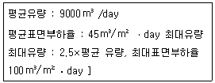
- 12 m
- 15 m
- 17 m
- 20 m
(정답률: 45%)
60. 폐수 유량이 2000m3/d, 부유 고형물의 농도가 200mg/L이다. 공기부상 시험에서 A/S비가 0.⑤일 때 최적의 부상을 나타낸다. 설계온도 20℃, 이 때의 공기 용해도는 18.7mL/L, 흡수비 0.5, 표면부하율이 120m3/(m2 ㆍ d), 운전압력이 3기압 이라면 반송비와 부상조의 필요한 표면적은? (단, 반송이 있는 공기 부상조 기준)
- 0.82, 25m2
- 0.82, 30m2
- 0.87, 25m2
- 0.87, 30m2
(정답률: 35%)
4과목: 수질오염공정시험기준
61. 다음은 자외선/가시선 분광법에 의한 페놀류 정량 측정에 관한 내용이다. ( )안에 맞는 내용은?
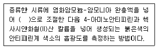
- pH 8
- pH 9
- pH 10
- pH 11
(정답률: 57%)
62. 화학적 산소요구량(COD)을 적정법-산성 과망간산칼륨법으로 측정할 때 아질산염의 방해가 우려되는 경우, 간접 제거방법으로 옳은 것은?
- 아질산성 질소 1mg 당 10mg의 황산은을 넣는다.
- 아질산성 질소 1mg 당 10mg의 질산은을 넣는다.
- 아질산성 질소 1mg 당 10mg의 옥살산나트륨을 넣는다.
- 아질산성 질소 1mg 당 10mg의 설파민산을 넣는다.
(정답률: 36%)
63. 물속에 존재하는 비등점이 높은 유류에 속하는 석유계 총탄화수소를 다이클로로메탄으로 추출하여 기체 크로마토그래피에 따라 확인 및 정량할 때의 정량 한계는? (단, 석유계 총탄화수소 용매추출/기체크로마토그래피법)
- 0.2mg/L
- 0.5mg/L
- 1.0mg/L
- 2.0mg/L
(정답률: 30%)
64. 다음은 카드뮴을 자외선/가시선 분광법을 이용하여 측정할 때에 관한 설명이다. ( )안에 내용으로 옳은 것은?
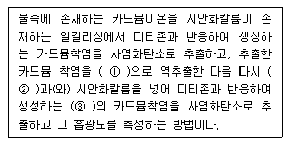
- ① 타타르산용액, ② 수산화나트륨, ③ 적색
- ① 아스코르빈산용액, ② 염산(1+15), ③ 적색
- ① 타타르산용액, ② 수산화나트륨, ③ 청색
- ① 아스코르빈산용액, ② 염산(1+15), ③ 청색
(정답률: 57%)
65. 부유물질(SS) 측정시, 건조시키는 온도와 시간은?
- 100 ~ 1⑤℃, 4시간
- 100 ~ 1⑤℃, 2시간
- 1⑤ ~ 110℃, 4시간
- 1⑤ ~ 110℃, 2시간
(정답률: 39%)
66. 식물성플랑크톤을 현미경계수법으로 측정할 때 분석기기 및 기구에 관한 내용으로 틀린 것은?
- 광학현미경 혹은 위상차 현미경 : 1000배율까지 확대 가능한 현미경을 사용한다.
- 대물마이크로미터 : 눈금이 새겨져 있는 평평한 판으로 현미경으로 물체의 길이를 측정하고자 할 때 쓰는 도구로 접안마이크로미터 한 눈금의 길이를 계산하는데 사용한다.
- 혈구계수기 : 슬라이드글라스의 중앙에 격자모양의 계수 구역이 상하 2개로 구분되어 있으며 계수 구역에는 격자모양으로 구분이 되어 있어 각 격자 구역 내의 침전된 조류를 계수한 후 mL 당 총 세포수를 환산한다.
- 접안마이크로미터 : 평평한 유리에 새겨진 눈금으로 접안렌즈에 부착하여 대물마이크로미터 길이 환산에 적용한다.
(정답률: 44%)
67. 기체크로마토그래피를 적용한 알킬수은 정량에 관한 내용으로 틀린 것은?
- 검출기는 전자포획형 검출기를 사용하고 검출기의온도는 140~200℃ 로 한다.
- 정량한계는 0.00⑤mg/L 이다.
- 알킬수은화합물을 사염화탄소로 추출한다.
- 정밀도(% RSD)는 ±25% 이다.
(정답률: 29%)
68. 시료의 전처리를 하지 않는 경우로 옳은 것은?
- 무색투명한 탁도 1 NTU 이하인 시료의 경우 전처리 과정을 생략
- 무색투명한 탁도 5 NTU 이하인 시료의 경우 전처리 과정을 생략
- 색도 1도 이하, 탁도 5 NTU 이하인 시료의 경우 전처리 과정을 생략
- 색도 2도 이하, 탁도 10 NTU 이하인 시료의 경우 전처리 과정을 생략
(정답률: 38%)
69. 다음 측정항목 중 시료 보존방법이 다른 것은?
- 총유기탄소
- 색도
- 아질산성 질소
- 6가크롬
(정답률: 31%)
70. 다음은 총대장균군을 막여과법으로 정량할 때에 관한 설명이다. ( )안에 옳은 내용은?
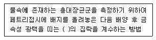
- 적색이나 진한적색 계통
- 청색이나 진한청색 계통
- 갈색이나 진한갈색 계통
- 황색이나 진한황색 계통
(정답률: 46%)
71. 페놀류 분석용 시료에 산화제가 공존할 경우 시료 보존방법으로 옳은 것은?
- 채수 즉시 황산암모늄철용액을 첨가한다.
- 채수 즉시 티오황산나트륨용액을 첨가한다.
- 채수 즉시 아스코빈산용액을 첨가한다.
- 채수 즉시 과황산나트륨을 첨가한다.
(정답률: 27%)
72. 유량계에 따른 ‘정밀도, 정확도’ 로 옳은 것은? (단, 최대유량 : 최소유량 = 4 : 1)
- 벤튜리미터 정확도(실제유량에 대한 %) : ± 3
- 벤튜리미터 정밀도(최대유량에 대한 %) : ± 5
- 오리피스 정확도(실제유량에 대한 %) : ± 3
- 오리피스 정밀도(최대유량에 대한 %) : ± 1
(정답률: 26%)
73. 총칙의 내용(용어의 정의 등)으로 틀린 것은?
- 용기 : 시험에 관련된 물질을 보호하고 이물질이 들어가는 것을 방지할 수 있는 것을 말한다.
- 바탕시험을 하여 보정한다 : 시료에 대한 처리 및 측정을 할 때, 시료를 사용하지 않고 같은 방법으로 조작한 측정치를 빼는 것을 말한다.
- 정확히 취하여 : 규정한 양의 액체를 부피피펫으로 눈금까지 취하는 것을 말한다.
- 정밀히 단다 : 규정된 양의 시료를 취하여 화학저울 또는 미량저울로 칭량함을 말한다.
(정답률: 42%)
74. 음이온계면활성제(자외선/가시선 분광법) 측정에 관한 설명으로 틀린 것은?
- 지표수, 지하수, 폐수 등에 적용할 수 있으며 정량 한계는 0.02mg/L 이다.
- 주로 철, 아연이 함유한 시료인 경우에 간섭현상이 현저하다.
- 흡광도를 650mm에서 측정하는 방법이다.
- 청색의 착화합물을 클로로폼으로 추출한다.
(정답률: 27%)
75. 시료 채취시 유의사항으로 틀린 것은?
- 시료채취용기는 시료를 채우기 전에 시료로 3회 이상 씻은 다음 사용한다.
- 유류 또는 부유물질 등이 함유된 시료는 균질성이 유지될 수 있도록 채취하여야 하며 침전물 등이 부상 하여 혼입되어서는 안 된다.
- 심부층의 지하수 채취시에는 고속양수펌프를 이용하여 채취시간을 최소화함으로서 수질의 변질을 방지하여야 한다.
- 용존가스, 환원성 물질, 휘발성유기화합물, 냄새, 유류 및 수소이온 등을 측정하기 위한 시료를 채취할때는 운반 중 공기와의 접촉이 없도록 시료 용기에 가득 채운 후 빠르게 뚜껑을 닫는다.
(정답률: 50%)
76. 전기전도도 측정계를 이용하여 물중에 전기전도도를 측정시 셀 상수 측정을 위한 전도도 표준용액은?
- 염화나트륨 용액
- 염화칼륨 용액
- 과망간산칼륨 용액
- 묽은 염산 용액
(정답률: 32%)
77. 적정법으로 염소이온 측정시 아황산이온, 티오황산이온, 황산이온의 간섭을 방지하는 방법으로 가장 적절한 것은?
- 황산알루미늄 주입으로 응집제거함
- 클로로폼으로 추출함
- 과황산수소로 산화시킴
- 아세트산아연용액으로 탈이온화
(정답률: 23%)
78. 물속에 존재하는 셀레늄 측정방법으로 옳은 것은?
- 자외선/가시선 분광법 - 산화법
- 자외선/가시선 분광법 - 환원 증류법
- 수소화물생성-원자흡수분광광도법
- 양극벗김전압전류법
(정답률: 47%)
79. 수두차가 작아도 유량측정의 정확도가 양호하며 측정하려는 폐, 하수 중의 부유물질 또는 토사 등이 많이 섞여 있는 경우에도 목부분에서의 유속이 상당히 빠르므로 부유물질의 침전이 적고 자연유하가 가능한 특징을 가지는 유량계는?
- 사각웨어
- 벤투리미터
- 직각 삼각웨어
- 파살수로
(정답률: 32%)
80. 다음은 아연(자외선/가기선 분광법)정량에 관한 내용이다. ( )안에 옳은 것은?
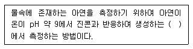
- 적색 킬레이트 화합물의 흡광도를 520nm
- 청색 킬레이트 화합물의 흡광도를 620nm
- 황색 킬레이트 화합물의 흡광도를 560nm
- 적갈색 킬레이트 화합물의 흡광도를 460nm
(정답률: 43%)
5과목: 수질환경관계법규
81. 규정을 위반하여 골프장 안의 잔디 및 수목 등에 맹, 고독성 농약을 사용한 자에 대한 법적 처분 기준은?
- 500만원 이하의 벌금
- 300만원 이하의 벌금
- 300만원 이하의 과태료
- 1000만원 이하의 과태료
(정답률: 38%)
82. 비점오염저감시설의 시설유형인 장치형 시설에 해당되지 않는 것은?
- 침투형 시설
- 여과형 시설
- 와류형 시설
- 생물학적 처리형 시설
(정답률: 39%)
83. 다음은 과징금에 관한 내용이다. ( )안에 옳은 내용은?
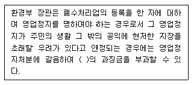
- 1억원 이하
- 2억원 이하
- 3억원 이하
- 5억원 이하
(정답률: 38%)
84. 수질오염경보 중 조류경보의 단계가 [조류경보]인 경우 취수장, 정수장 관리자의 조치사항과 가장 거리가 먼 것은?
- 조류증식 수심 이하로 취수구 이동
- 취수구와 조류가 심한 지역에 대한 방어막 설치
- 정수처리 강화(활성탄 처리, 오존처리)
- 정수의 독소분석 실시
(정답률: 30%)
85. 초과배출부과금 부과 대상 수질오염물질이 아닌 것은?
- 트리클로로에틸렌
- 클로로포름
- 아연 및 그 화합물
- 테트라클로로에틸렌
(정답률: 36%)
86. 환경부장관이 비점오염저감계획을 검토하거나 비점오염원 저감시설을 설치하지 아니하여도 되는 사업장을 인정하려는 때에 그 적정성에 관하여 의견을 들을 수 있는 환경부령으로 정한 비점오염 관련 관계전문기관으로 옳은 것은?
- 한국환경정책평가연구원
- 시도보건환경연구원
- 국립환경과학원
- 한국환경인력개발원
(정답률: 22%)
87. 1일 폐수배출량이 500m3인 사업장의 규모별 구분은?
- 2종 사업장
- 3종 사업장
- 4종 사업장
- 5종 사업장
(정답률: 36%)
88. 환경기술인 또는 기술요원이 관련 분야에 따라 이수하여야 할 교육과정의 교육기간 기준은? (단, 정보통신매체를 이용한 원격교육 제외)(관련 규정 개정전 문제로 여기서는 기존 정답인 4번을 누르면 정답 처리됩니다. 자세한 내용은 해설을 참고하세요.)
- 16시간 이내
- 24시간 이내
- 3일 이내
- 5일 이내
(정답률: 44%)
89. 폐수처리업자의 준수사항으로 틀린 것은?
- 증발농축시설, 건조시설, 소각시설의 대기오염물질 농도를 매월 1회 자가측정하여야 하며 분기마다 악취에 대한 자가측정을 실시하여야 한다.
- 처리 후 발생하는 슬러지의 수분함량은 85% 이하 이어야 하며 처리는 폐기물관리법에 따라 적정하게 처리하여야 한다.
- 수탁한 폐수는 정당한 사유 없이 5일 이상 보관할수 없으며 보관폐수의 전체량이 저장시설 저장능력의 80% 이상 되게 보관하여서는 아니 된다.
- 기술인력을 그 해당 분야에 종사하도록 하여야 하며 폐수처리시설을 16시간 이상 가동할 경우에는 해당 처리시설의 현장 근무 2년 이상의 경력자를 작업현장에 책임 근무 하도록 하여야 한다.
(정답률: 41%)
90. 수질오염경보인 조류경보 단계 중 [조류 주의보] 발령 기준으로 옳은 것은?(오류 신고가 접수된 문제입니다. 반드시 정답과 해설을 확인하시기 바랍니다.)
- 2회 연속 채취 시 클로로필-a 농도 15mg/m 이상이고 남조류의 세포 수가 250세포/mL 이상인 경우
- 2회 연속 채취 시 클로로필-a 농도 15mg/m 이상이고 남조류의 세포 수가 500세포/mL 이상인 경우
- 2회 연속 채취 시 클로로필-a 농도 25mg/m 이상이고 남조류의 세포 수가 250세포/mL 이상인 경우
- 2회 연속 채취 시 클로로필-a 농도 25mg/m 이상이고 남조류의 세포 수가 500세포/mL 이상인 경우
(정답률: 24%)
91. 다음은 하천(생활환경기준)의 등급별 수질 및 수생태계의 상태에 대한 설명이다. 해당 되는 등급은?
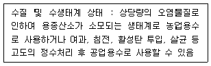
- 보통
- 약간 나쁨
- 나쁨
- 매우 나쁨
(정답률: 36%)
92. 오염총량관리기본방침에 포함되어야 하는 사항과 가장 거리가 먼 내용은?
- 오염총량관리의 목표
- 오염총량관리의 대상 수질오염물질 종류
- 오염원의 조사 및 오염부하량 산정방법
- 오염총량관리 현황
(정답률: 35%)
93. 다음은 폐수무방류배출시설의 세부 설치기준에 관한 내용이다. ( )안에 옳은 내용은?
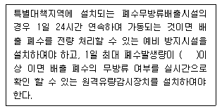
- 100m
- 200m
- 300m
- 500m
(정답률: 34%)
94. 수질 및 수생태계 보전에 관한 법률에 사용되는 용어의 정의로 틀린 것은?
- 강우유출수 : 점오염원, 비점오염원, 기타오염원의 수질 오염물질이 섞여 유출되는 빗물 또는 눈녹은 물등을 말한다.
- 비점오염저감시설 : 수질오염방지시설 중 비점오염원으로부터 배출되는 수질오염물질을 제거하거나 감소하게 하는 시설로서 환경부령이 정하는 것을 말한다.
- 폐수무방류배출시설 : 폐수배출시설에서 발생하는 폐수를 당해 사업장 안에서 수질오염방지시설을 이용하여 처리하거나 동일 배출시설에 재이용하는 등 공공수역으로 배출하지 아니하는 폐수배출시설을 말한다.
- 수질오염물질 : 수질오염의 요인이 되는 물질로서 환경부령이 정하는 것을 말한다.
(정답률: 29%)
95. 낚시 제한구역 내에서의 낚시를 하고자 하는 자에 대한 제한 행위와 가장 거리가 먼 것은?
- 낚시대 1개당 5개의 낚시 바늘을 사용하는 행위
- 취사 행위
- 낚시바늘에 끼워서 사용하지 아니하고 물고기를 유인하기 위하여 떡밥, 어분 등을 던지는 행위
- 화장실이 아닌 곳에서 대, 소변을 보는 행위
(정답률: 22%)
96. 폐수종말처리시설의 방류수수질기준 중 생태독성 (TU)기준으로 옳은 것은? (단, 2012.1.1~2012.12.31 수질기준, ( )농공단지 폐수종말처리시설 방류수 수질기준)
- 1(1) 이하
- 1(2) 이하
- 2(2) 이하
- 2(3) 이하
(정답률: 41%)
97. 위임업무 보고사항 중 보고 횟수가 ‘수시’에 해당 되는 것은?
- 폐수무방류배출시설의 설치허가(변경허가) 현황
- 기타 수질오염원 현황
- 배출업소의 지도, 점검 및 행정처분 실적
- 비점오염원의 설치신고 및 방지시설 설치 현황
(정답률: 31%)
98. 하천 수질 및 수생태계 상태의 생물등급이 [매우좋음~좋음]인 경우, 생물 지표종(어류)으로 옳은 것은?
- 쉬리
- 쏘가리
- 은어
- 금강모치
(정답률: 38%)
99. 초과부과금 산정기준에서 수질오염물질 1킬로그램당 부과금액이 가장 적은 것은?
- 카드뮴 및 그 화합물
- 수은 및 그 화합물
- 유기인 화합물
- 비소 및 그 화합물
(정답률: 38%)
100. 수질오염방지시설 중 생물화학적 처리시설이 아닌 것은?
- 살균시설
- 접촉조
- 안정조
- 폭기시설
(정답률: 41%)